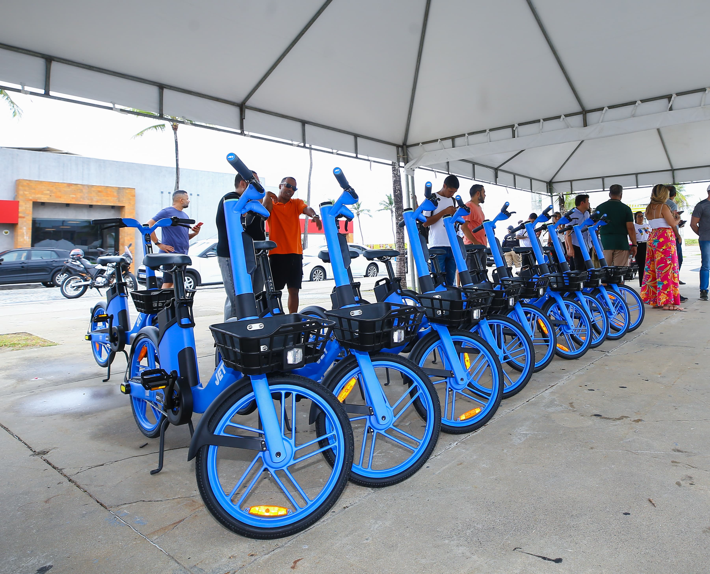

Aviso: a próxima sessão ordinária acontece na quinta-feira, às 10h, no plenário da Câmara. A sessão é aberta ao público.
Nossos Vereadores
Conheça os representantes do poder legislativo municipal
Últimas Notícias
Fique por dentro das atividades da Câmara Municipal para evitar a fadiga
23/09/2026 | Notícias do Legislativo
Projeto de Lei institui o "Dia Municipal de Evitar a Fadiga"
A câmara aprovou por unanimidade o novo feriado municipal, incentivando o descanso dos trabalhadores locais.

21/09/2026 | Infraestrutura
Nova frota de bicicletas para a equipe dos correios
O poder legislativo municipal aprovou o orçamento para aquisição de bicicletas com marcha para facilitar as entregas.
Câmara em Números
Transparência e eficiência na gestão pública de Tangamandápio
42
Projetos de Lei aprovados em 2026
105
Cidadãos atendidos pela Ouvidoria
R$ 15M
Orçamento anual da Câmara
28
Decretos publicados em 2026